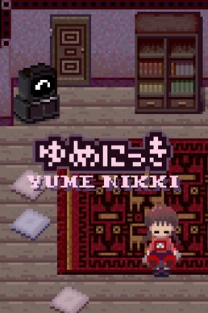
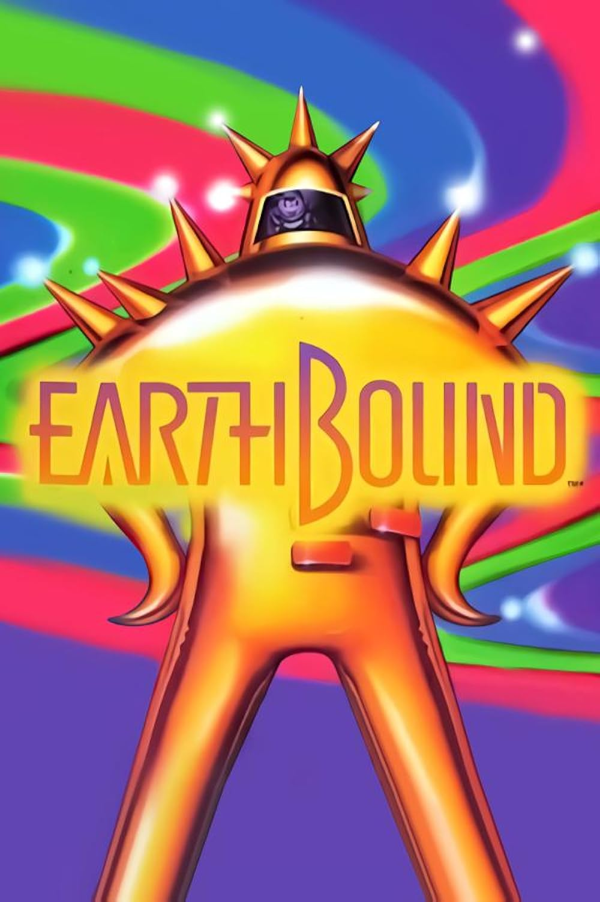

Video Game Inspirations
Games with low-poly graphics like Signalis
are very eye-catching to me,
and I desire to incorporate those kinds of graphics into
several of my video game creations if possible.
Something about them just brings
nostalgia to my mind!
(Probably due to the fact that low-poly graphics
inspire thoughts of the dawn of video games.)
I also find the relationships between man, machine, and artificial intelligence to be
quite fascinating.
I will certainly try to explore these relationships and themes
in my own way through my games.
RPGs like Undertale,
Yume Nikki,
Omori, and
Earthbound
are interesting to me because while they may have simplistic graphics,
they are able to explore heavy themes
- such as depression and the consequences of choice -
and they often acquire large, devoted fanbases.
I am interested in using this genre to explore some other kinds of themes,
such as identity, loneliness and intimacy, and the nature of good and evil.

|
 |

|
 |
While it is merely a hoax, the urban legend of Polybius
has intrigued me ever since I learned about it.
One of the games in my catalog of ideas is
based on the legend of Polybius,
presenting itself as surrealist and jarring to reflect the
ambiguity of what exactly
Polybius could have been like.